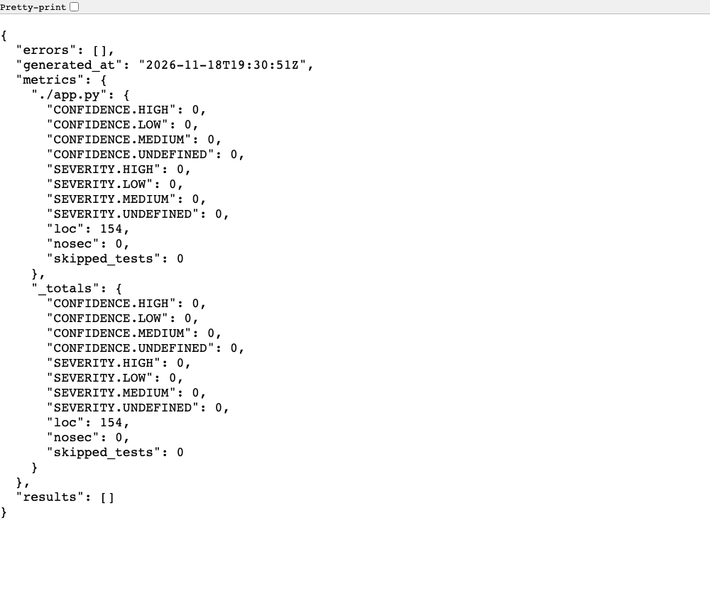
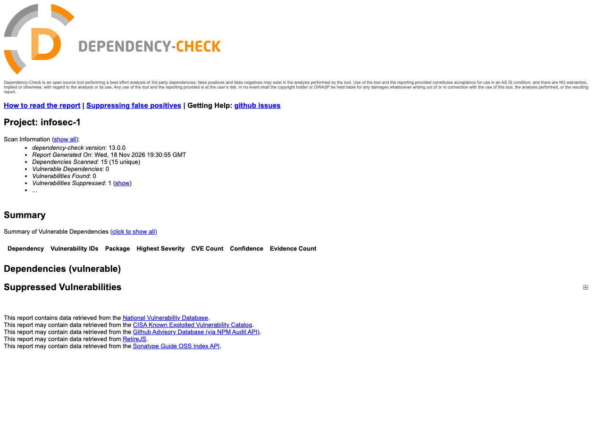
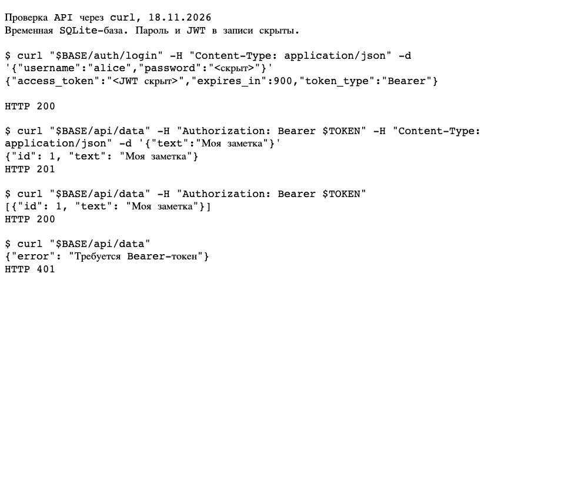
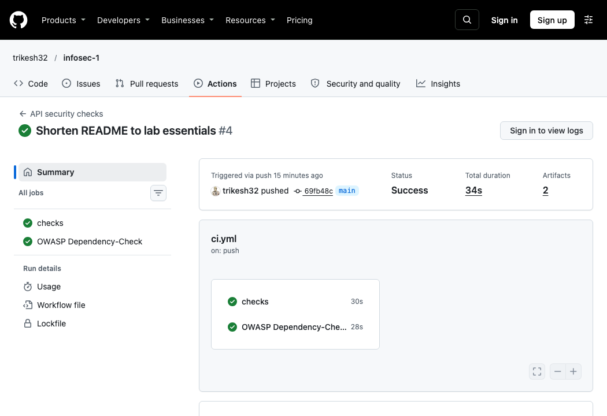

Федеральное государственное автономное образовательное
учреждение высшего образования
«Национальный исследовательский университет ИТМО»
Факультет программной инженерии и компьютерной техники
Дисциплина «Информационная безопасность»
Отчёт по лабораторной работе №1
«Разработка защищенного REST API
с интеграцией в CI/CD»
Санкт-Петербург
2026 г.
Репозиторий: github.com/trikesh32/infosec-1
API для заметок на Flask + SQLite. Можно войти, создать заметку и получить свои заметки.
Нужен Python 3.14. Из папки проекта:
python3.14 -m venv .venv
source .venv/bin/activate
pip install -r requirements.txt
export JWT_SECRET="$(python -c 'import secrets; print(secrets.token_hex(32))')"
flask --app app create-user alice
flask --app app run
При создании пользователя вводится пароль от 12 до 128 символов. База создаётся сама.
| Метод | Что делает | JSON запроса |
|---|---|---|
POST /auth/login |
Выдаёт JWT | {"username":"alice","password":"YOUR_PASSWORD"} |
POST /api/data |
Создаёт заметку | {"text":"Текст заметки"} |
GET /api/data |
Возвращает свои заметки | Не нужен |
Пример входа, вместо YOUR_PASSWORD нужно поставить свой пароль:
curl http://127.0.0.1:5000/auth/login -H 'Content-Type: application/json' \
-d '{"username":"alice","password":"YOUR_PASSWORD"}'
Для /api/data нужен заголовок Authorization: Bearer <access_token> с токеном из ответа. Для POST ещё нужен Content-Type: application/json. Без токена будет 401.
?, а не склеиваются с SQL.markupsafe.escape() при выдаче в JSON.pip install -r requirements-dev.txt
pytest -q
На push и PR запускаются тесты, Bandit, pip-audit и OWASP Dependency-Check. Dependency-Check роняет сборку при CVSS от 7. Для Python включён экспериментальный анализатор.
Запуски CI и отчёты. Отчёты лежат в артефактах security-results и dependency-check-results, хранятся 14 дней.
Одно исключение: сканер перепутал PyJWT с PHP-библиотекой и выдал чужую CVE-2025-45770.
Успешный запуск: https://github.com/trikesh32/infosec-1/actions/runs/44381258541
Скриншоты из README приведены на следующих страницах. Исходные отчёты из этого запуска сохранены в docs/evidence.
Скриншот JSON-отчёта из артефакта security-results. Список results пуст, ошибок анализа нет.

Рисунок 1. Отчёт Bandit из GitHub Actions
Проверены 15 зависимостей. После исключения одного ложного срабатывания найденных уязвимостей нет. CVE-2025-45770 относится к PHP-пакету lcobucci/jwt, а не к PyJWT. Исключение ограничено этой CVE и PyJWT 2.15.1.

Рисунок 2. HTML-отчёт из артефакта dependency-check-results
Запустил приложение с временной базой и создал пользователя. Вход вернул 200 и JWT, создание заметки 201, чтение 200. Без токена получил 401. Пароль и токен в записи скрыты.

Рисунок 3. Сохранённые команды curl и ответы API
Тесты, Bandit, pip-audit и Dependency-Check прошли. Ссылка на запуск: https://github.com/trikesh32/infosec-1/actions/runs/44381258541.

Рисунок 4. Успешный запуск pipeline
API работает, доступ без токена закрыт. Проверки безопасности запускаются автоматически.